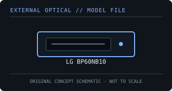

[ OPTICAL DRIVES // IDENTIFIED EXTERNAL MODEL ]
LG BP60NB10
Portable slim Blu-ray/DVD writer supporting BDXL and M-DISC. Read capability, write support and playback software are distinct and should be checked against the exact BP60NB10 documentation.

IDENTIFICATION: Confirm the full model/suffix against the label and manufacturer documentation. Read capability is not write capability; speed ratings depend on media and recording mode.
Model-specific specifications
| Catalog subcategory | External Blu-ray drives |
|---|---|
| Exact product identifier | LG BP60NB10 |
| Supported write formats / rates | BD-R up to 6× for supported SL/DL media and up to 4× for supported TL/QL BDXL media; BD-RE up to 2×. DVD±R up to 8×, DVD±R DL up to 6×, DVD-RAM up to 5×, CD-R up to 24× and CD-RW up to 16×. |
| Supported read formats / rates | BD-ROM up to 6×, including supported BDXL read media; DVD-ROM up to 8×; CD-ROM up to 24×. Supports BD-R/RE, BDXL and M-DISC, plus listed DVD/CD formats. |
| USB interface and power | USB 2.0 external interface and USB bus power. Connect to a compatible direct host port; a USB-C host may require an appropriate data adapter, not a charge-only cable. |
| Host compatibility | LG’s documentation covers Windows and Mac OS X data use. Included CyberLink software is Windows-oriented; Blu-ray playback on any host also requires compatible licensed playback software and applicable protected-video support. |
| Model distinction | The BP60NB10 supports BDXL layers with media-dependent recording rates; a 6× BD-R rating does not apply uniformly to every BDXL layer or BD-RE. |
Host and media notes
The BP60NB10 supports BDXL layers with media-dependent recording rates; a 6× BD-R rating does not apply uniformly to every BDXL layer or BD-RE.
- Use the drive only with media types explicitly supported by the exact manual. BDXL, standard BD-R/RE and UHD Blu-ray are distinct capabilities.
- Check operating-system and playback/authoring application support independently; a USB connection alone does not provide Blu-ray codec, protected-video or UHD playback capability.
- For preservation work, record drive model/firmware, host interface, software, media type, checksums and read/verification errors with each image.
Model documentation and specification sources
- LG — BP60NB10 manufacturer product/support pageManufacturer model page and locator for product documentation.
- AV-iQ — LG BP60NB10 specificationsModel-specific product listing for interface and supported media.
Manufacturer and manual speed ratings are maxima under supported media conditions and are not a guarantee of actual sustained read/write performance on an individual disc.